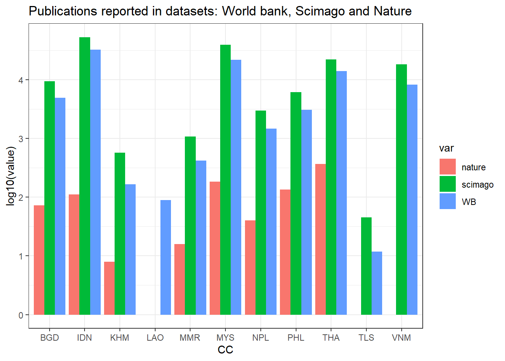
The Cambodian outlier
visualisation
academia
R
An exploration on technical and scientific publications versus other development indicators.
I have been living and working in Cambodia also in tertiary education. Sometimes when discussing with colleagues on academic partnerships, availability of data, academic publications there is often the impression that Cambodia is an outlier with economic development increasing much faster than academic production. But is that so?
Publication per country
I started to look into datasets that could provide some evidence and I found one by World Bank record of technical and academic publications, one by SCIMAGO and one by Nature.Below how the 3 dataset report data from a set of chosen countries (note publication are in Log-scale).
Correlation with other development indicators
Using a UNDP dataset 1, we can see publications per million how it correlates with other development indices. Positive correlation is found highest in Gross national Income (GNI), particularly in the GNI pro-capita for woman. Sollowing, material footprint (MF) and Human Development Indicator (HDI) with different variants,with the most correlated being the Inequality-adjusted Human Development Index. The first ten parameters by positive correlation end with expectancy at birth. Referring to parameters with negative correlation, only one parameters has a correlation over 0.75 (since negative correlation this means < 0.75): gender inequality index. interesting to notice that both the most positive and negative correlated have a gender component.
1 UNDP (United Nations Development Programme). 2022. Human Development Report 2021/2022: Uncertain Times, Unsettled Lives: Shaping our Future in a Transforming World. New York.
Attaching package: 'kableExtra'The following object is masked from 'package:dplyr':
group_rows| IND | WBpp |
|---|---|
| WBpp | 1.0000000 |
| gni_pc_f_2020 | 0.9211858 |
| gnipc_2020 | 0.9192612 |
| gni_pc_m_2020 | 0.9109096 |
| mf_2020 | 0.8011785 |
| ihdi_2020 | 0.7857304 |
| hdi_m_2020 | 0.7853601 |
| diff_hdi_phdi_2020 | 0.7815142 |
| le_m_2020 | 0.7773687 |
| hdi_2020 | 0.7718881 |
IND WBpp pop hdi_2020
Length:37 Min. :-0.7961 Min. :-0.117971 Min. :-0.9286
Class :character 1st Qu.:-0.1881 1st Qu.:-0.051610 1st Qu.:-0.2801
Mode :character Median : 0.6717 Median :-0.020688 Median : 0.8239
Mean : 0.3400 Mean : 0.009199 Mean : 0.3810
3rd Qu.: 0.7719 3rd Qu.: 0.027066 3rd Qu.: 0.9247
Max. : 1.0000 Max. : 1.000000 Max. : 1.0000
le_2020 eys_2020 mys_2020 gnipc_2020
Min. :-0.9398 Min. :-0.8574 Min. :-0.9205 Min. :-0.8401
1st Qu.:-0.1897 1st Qu.:-0.2313 1st Qu.:-0.2580 1st Qu.:-0.1890
Median : 0.7462 Median : 0.7464 Median : 0.7379 Median : 0.7547
Mean : 0.3484 Mean : 0.3620 Mean : 0.3553 Mean : 0.3672
3rd Qu.: 0.8512 3rd Qu.: 0.8409 3rd Qu.: 0.8558 3rd Qu.: 0.8392
Max. : 1.0000 Max. : 1.0000 Max. : 1.0000 Max. : 1.0000
gdi_2020 hdi_f_2020 le_f_2020 eys_f_2020
Min. :-0.71280 Min. :-0.9361 Min. :-0.9584 Min. :-0.8654
1st Qu.:-0.08408 1st Qu.:-0.2643 1st Qu.:-0.1882 1st Qu.:-0.2308
Median : 0.45120 Median : 0.8216 Median : 0.7177 Median : 0.7392
Mean : 0.25399 Mean : 0.3816 Mean : 0.3437 Mean : 0.3612
3rd Qu.: 0.60666 3rd Qu.: 0.9187 3rd Qu.: 0.8494 3rd Qu.: 0.8493
Max. : 1.00000 Max. : 1.0000 Max. : 1.0000 Max. : 1.0000
mys_f_2020 gni_pc_f_2020 hdi_m_2020 le_m_2020
Min. :-0.9313 Min. :-0.8303 Min. :-0.9180 Min. :-0.9048
1st Qu.:-0.2611 1st Qu.:-0.1867 1st Qu.:-0.2907 1st Qu.:-0.1880
Median : 0.7319 Median : 0.7319 Median : 0.8277 Median : 0.7369
Mean : 0.3546 Mean : 0.3619 Mean : 0.3796 Mean : 0.3468
3rd Qu.: 0.8595 3rd Qu.: 0.8216 3rd Qu.: 0.9206 3rd Qu.: 0.8268
Max. : 1.0000 Max. : 1.0000 Max. : 1.0000 Max. : 1.0000
eys_m_2020 mys_m_2020 gni_pc_m_2020 ihdi_2020
Min. :-0.8334 Min. :-0.8936 Min. :-0.8420 Min. :-0.9575
1st Qu.:-0.2294 1st Qu.:-0.2404 1st Qu.:-0.1957 1st Qu.:-0.2685
Median : 0.7367 Median : 0.7385 Median : 0.7617 Median : 0.8290
Mean : 0.3560 Mean : 0.3508 Mean : 0.3676 Mean : 0.3737
3rd Qu.: 0.8105 3rd Qu.: 0.8399 3rd Qu.: 0.8458 3rd Qu.: 0.9113
Max. : 1.0000 Max. : 1.0000 Max. : 1.0000 Max. : 1.0000
coef_ineq_2020 loss_2020 ineq_le_2020 ineq_edu_2020
Min. :-0.9575 Min. :-0.9538 Min. :-0.9584 Min. :-0.9313
1st Qu.:-0.8619 1st Qu.:-0.8543 1st Qu.:-0.8604 1st Qu.:-0.8068
Median :-0.7134 Median :-0.7104 Median :-0.6811 Median :-0.6725
Mean :-0.3272 Mean :-0.3249 Mean :-0.3305 Mean :-0.3244
3rd Qu.: 0.2283 3rd Qu.: 0.2207 3rd Qu.: 0.2140 3rd Qu.: 0.2001
Max. : 1.0000 Max. : 1.0000 Max. : 1.0000 Max. : 1.0000
ineq_inc_2020 gii_2020 mmr_2020 abr_2020
Min. :-0.52455 Min. :-0.9461 Min. :-0.8424 Min. :-0.8568
1st Qu.:-0.41225 1st Qu.:-0.8625 1st Qu.:-0.7222 1st Qu.:-0.7780
Median :-0.38185 Median :-0.8133 Median :-0.5339 Median :-0.6771
Mean :-0.13473 Mean :-0.3585 Mean :-0.2616 Mean :-0.2995
3rd Qu.: 0.08794 3rd Qu.: 0.2659 3rd Qu.: 0.2500 3rd Qu.: 0.2602
Max. : 1.00000 Max. : 1.0000 Max. : 1.0000 Max. : 1.0000
se_f_2020 se_m_2020 pr_f_2020 pr_m_2020
Min. :-0.9100 Min. :-0.8696 Min. :-1.00000 Min. :-1.00000
1st Qu.:-0.2046 1st Qu.:-0.1756 1st Qu.:-0.08794 1st Qu.:-0.32265
Median : 0.6899 Median : 0.6656 Median : 0.26549 Median :-0.26549
Mean : 0.3326 Mean : 0.3242 Mean : 0.13984 Mean :-0.13984
3rd Qu.: 0.8201 3rd Qu.: 0.7956 3rd Qu.: 0.32265 3rd Qu.: 0.08794
Max. : 1.0000 Max. : 1.0000 Max. : 1.00000 Max. : 1.00000
lfpr_f_2020 lfpr_m_2020 phdi_2020 diff_hdi_phdi_2020
Min. :-0.26549 Min. :-0.36608 Min. :-0.8926 Min. :-0.7811
1st Qu.:-0.11122 1st Qu.:-0.26432 1st Qu.:-0.2822 1st Qu.:-0.1587
Median :-0.01958 Median :-0.18799 Median : 0.6338 Median : 0.7179
Mean : 0.03821 Mean :-0.06021 Mean : 0.3149 Mean : 0.3473
3rd Qu.: 0.09195 3rd Qu.: 0.15429 3rd Qu.: 0.8493 3rd Qu.: 0.7857
Max. : 1.00000 Max. : 1.00000 Max. : 1.0000 Max. : 1.0000
co2_prod_2020 mf_2020
Min. :-0.6304 Min. :-0.7472
1st Qu.:-0.1295 1st Qu.:-0.1292
Median : 0.5606 Median : 0.6642
Mean : 0.2722 Mean : 0.3368
3rd Qu.: 0.6306 3rd Qu.: 0.7533
Max. : 1.0000 Max. : 1.0000 | IND | WBpp |
|---|---|
| gii_2020 | -0.7960766 |
Visualising the previous correlation results, show the following
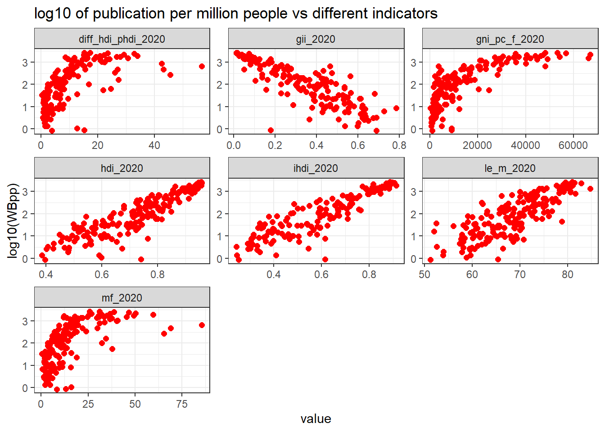
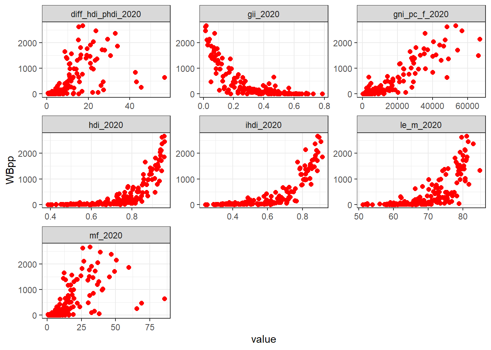
Let’s look at publication versus HDI and GII:
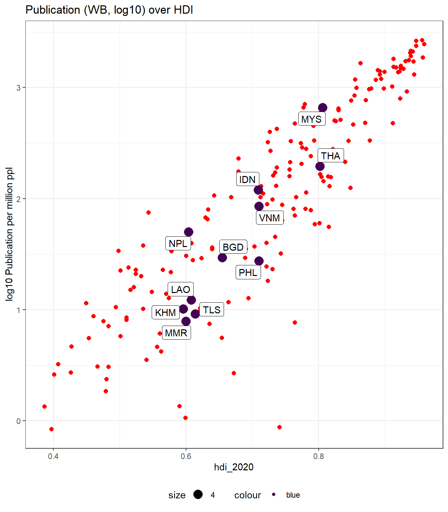
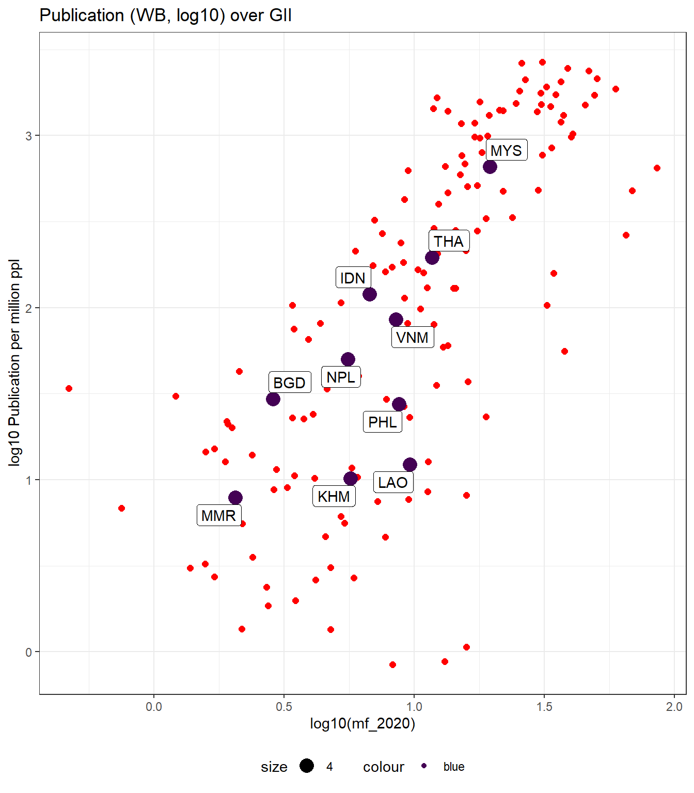
Publication over time
First let’s look at overall publication over time (x axis). Different trends can be seen: growing for Indonesia, Malaysia, Thailand, Vietnam while other remain rather steady (Laos, Cambodia, Myanmar).
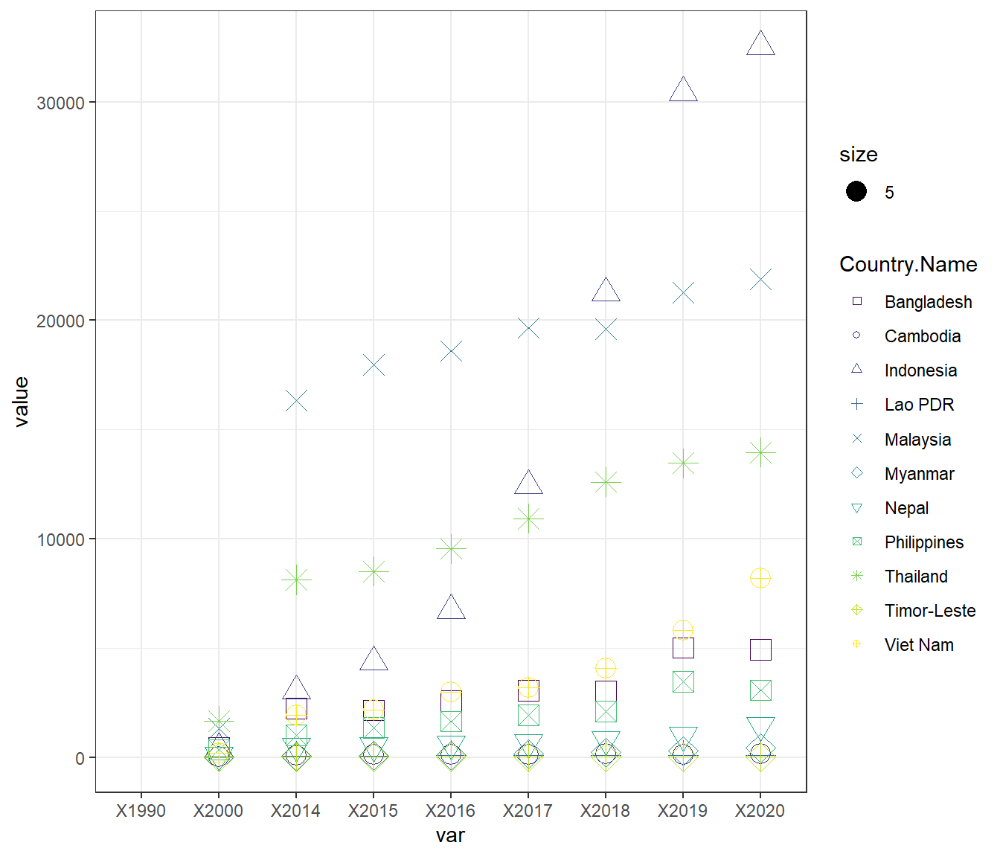
After adjusting to population, this is what it looks like for a selection of countries in Asia in 2020.
It can be observed that 4 countries (Lao, Cambodia, Timor Lest, Myanmar) are forming a group at the bottom. Below
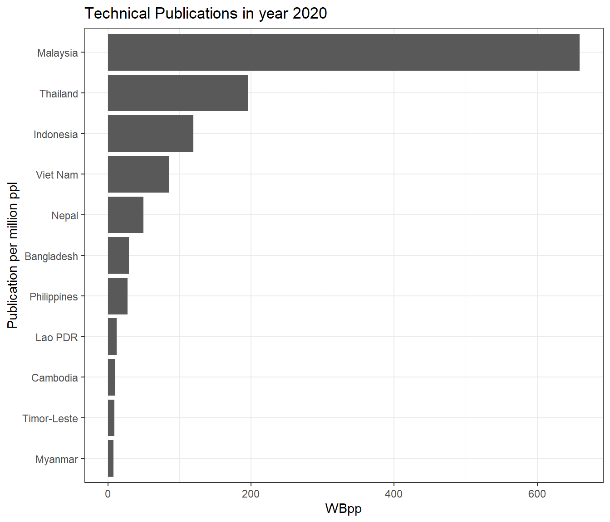
Publications and governance
Using the Rigorous and impartial public administration index, 1789 to 2023, the State Capacity Index and the Bertelsmann Transformation Index.
The first plot shows relation between Bertelsmann Transformation Index 2 and publication pro-capita.
2 The Status Index ranks the countries according to the state of their democracy and market economy, while the Governance Index ranks them according to their respective leadership’s performance. Distributed among the dimensions of democracy, market economy and governance, a total of 17 criteria are subdivided into 49 questions.
3 Question: Are public officials rigorous and impartial in the performance of their duties? Responses: 0: The law is not respected by public officials. Arbitrary or biased administration of the law is rampant. 1: The law is weakly respected by public officials. Arbitrary or biased administration of the law is widespread. 2: The law is modestly respected by public officials. Arbitrary or biased administration of the law is moderate. 3: The law is mostly respected by public officials. Arbitrary or biased administration of the law is limited. 4: The law is generally fully respected by the public officials. Arbitrary or biased administration of the law is very limited.
Rigorous and impartial public administration3
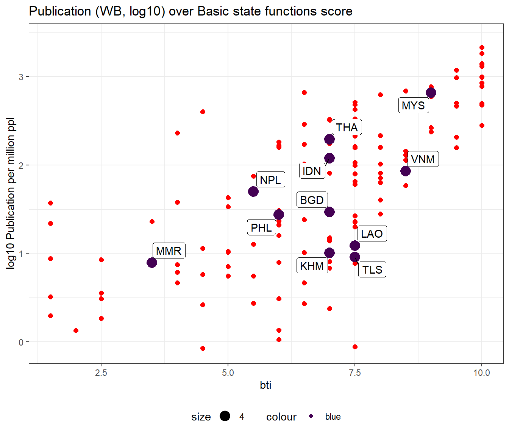
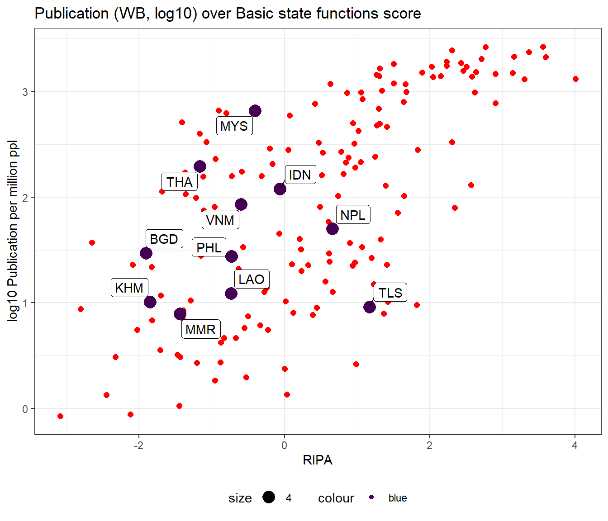
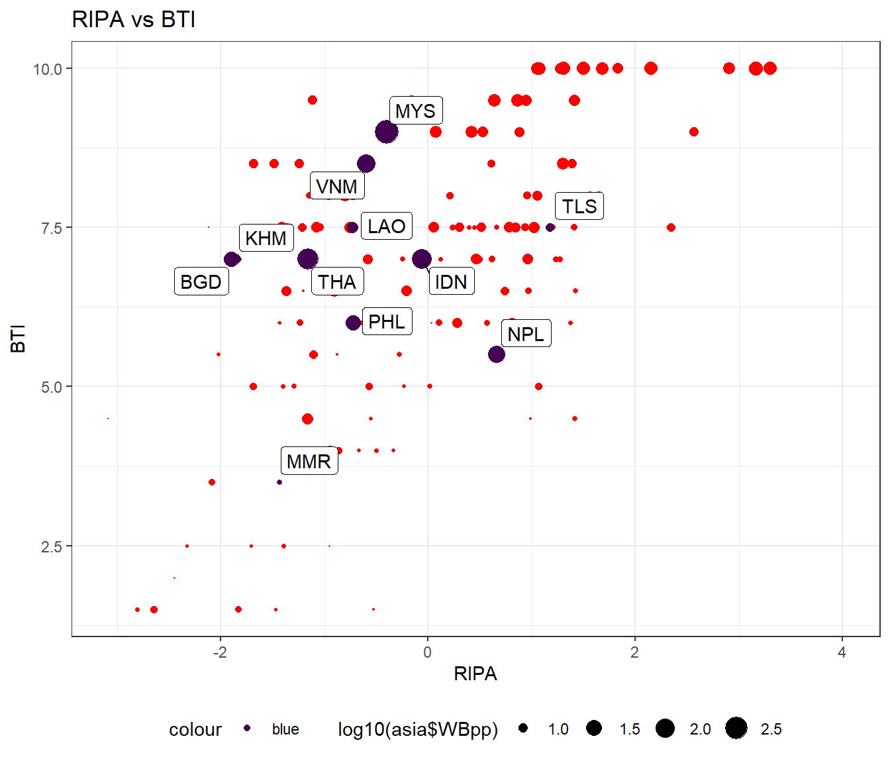
PISA
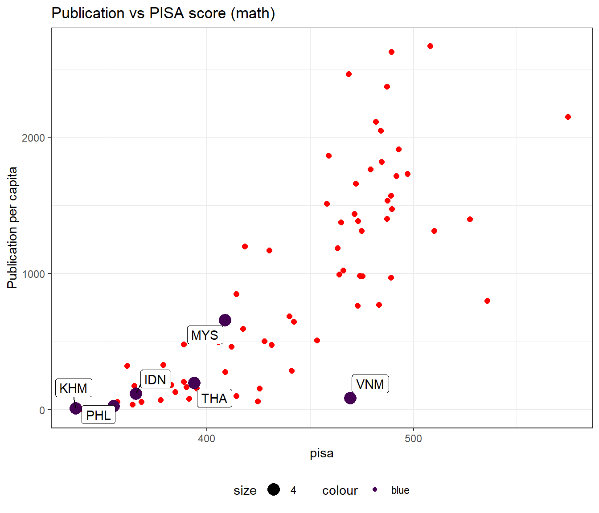
Comparison with different indicators
CC Series.Name AG.LND.FRST.K2 AG.SRF.TOTL.K2
Length:1415 Length:1415 Min. : 3695 Min. : 41291
Class :character Class :character 1st Qu.: 87463 1st Qu.: 343710
Mode :character Mode :character Median : 235777 Median : 1351128
Mean :1175163 Mean : 3407659
3rd Qu.:1026012 3rd Qu.: 4400750
Max. :8153116 Max. :17098250
NA's :1395 NA's :1395
BX.KLT.DINV.CD.WD BX.TRF.PWKR.CD.DT DT.DOD.DECT.CD
Min. :-2.422e+11 Min. :3.023e+08 Min. :2.556e+11
1st Qu.: 6.996e+09 1st Qu.:2.650e+09 1st Qu.:4.264e+11
Median : 1.927e+10 Median :5.857e+09 Median :5.051e+11
Mean : 2.847e+10 Mean :1.297e+10 Mean :7.008e+11
3rd Qu.: 6.303e+10 3rd Qu.:1.216e+10 3rd Qu.:5.744e+11
Max. : 2.531e+11 Max. :8.315e+10 Max. :2.326e+12
NA's :1395 NA's :1395 NA's :1407
DT.ODA.ALLD.CD DT.TDS.DECT.EX.ZS EG.USE.ELEC.KH.PC EG.USE.PCAP.KG.OE
Min. :-572500000 Min. : 9.195 Min. : NA Min. : NA
1st Qu.: 322014996 1st Qu.:15.625 1st Qu.: NA 1st Qu.: NA
Median : 612539978 Median :31.326 Median : NA Median : NA
Mean : 640372858 Mean :29.580 Mean :NaN Mean :NaN
3rd Qu.:1002005005 3rd Qu.:41.135 3rd Qu.: NA 3rd Qu.: NA
Max. :1794530029 Max. :50.350 Max. : NA Max. : NA
NA's :1408 NA's :1407 NA's :1415 NA's :1415
EN.ATM.CO2E.PC EN.POP.DNST ER.H2O.FWTL.ZS ER.PTD.TOTL.ZS
Min. : 1.576 Min. : 3.334 Min. : 1.187 Min. : 0.1907
1st Qu.: 3.817 1st Qu.: 33.558 1st Qu.: 9.723 1st Qu.: 7.1645
Median : 4.809 Median :134.101 Median : 18.334 Median :14.3496
Mean : 6.667 Mean :179.690 Mean : 68.081 Mean :17.3985
3rd Qu.: 8.771 3rd Qu.:247.832 3rd Qu.: 26.350 3rd Qu.:26.2925
Max. :14.776 Max. :531.109 Max. :974.167 Max. :40.2872
NA's :1395 NA's :1395 NA's :1395 NA's :1395
FS.AST.DOMS.GD.ZS GC.REV.XGRT.GD.ZS GC.TAX.TOTL.GD.ZS IC.REG.DURS
Min. : 53.69 Min. :10.54 Min. : 8.091 Min. : NA
1st Qu.: 67.76 1st Qu.:18.16 1st Qu.:10.396 1st Qu.: NA
Median : 92.25 Median :27.79 Median :13.144 Median : NA
Mean :161.76 Mean :26.48 Mean :15.022 Mean :NaN
3rd Qu.:234.72 3rd Qu.:29.62 3rd Qu.:21.334 3rd Qu.: NA
Max. :390.56 Max. :42.81 Max. :24.800 Max. : NA
NA's :1409 NA's :1397 NA's :1397 NA's :1415
IQ.SCI.OVRL IT.CEL.SETS.P2 MS.MIL.XPND.GD.ZS NE.EXP.GNFS.ZS
Min. :76.67 Min. : 82.62 Min. :0.7345 Min. :10.21
1st Qu.:79.72 1st Qu.:105.16 1st Qu.:1.2495 1st Qu.:18.27
Median :80.56 Median :120.32 Median :1.7482 Median :26.43
Mean :80.69 Mean :119.53 Mean :2.2255 Mean :29.78
3rd Qu.:81.39 3rd Qu.:129.26 3rd Qu.:2.5245 3rd Qu.:32.17
Max. :85.56 Max. :163.59 Max. :9.1785 Max. :78.27
NA's :1407 NA's :1395 NA's :1395 NA's :1395
NE.GDI.TOTL.ZS NE.IMP.GNFS.ZS NV.AGR.TOTL.ZS NV.IND.TOTL.ZS
Min. :14.42 Min. :13.18 Min. : 0.6601 Min. :16.79
1st Qu.:20.40 1st Qu.:16.09 1st Qu.: 1.4512 1st Qu.:19.98
Median :22.86 Median :25.32 Median : 2.4104 Median :25.20
Mean :24.59 Mean :27.73 Mean : 4.2671 Mean :26.05
3rd Qu.:28.96 3rd Qu.:32.34 3rd Qu.: 5.8729 3rd Qu.:30.02
Max. :43.37 Max. :68.20 Max. :18.6355 Max. :39.62
NA's :1395 NA's :1395 NA's :1395 NA's :1395
NY.GDP.DEFL.KD.ZG NY.GDP.MKTP.CD NY.GDP.MKTP.KD.ZG NY.GNP.ATLS.CD
Min. :-8.4632 Min. :3.857e+11 Min. :-11.167 Min. :4.086e+11
1st Qu.: 0.9306 1st Qu.:1.022e+12 1st Qu.: -7.818 1st Qu.:1.013e+12
Median : 1.7259 Median :1.485e+12 Median : -3.856 Median :1.631e+12
Mean : 4.1562 Mean :3.375e+12 Mean : -4.424 Mean :3.433e+12
3rd Qu.: 4.7702 3rd Qu.:2.678e+12 3rd Qu.: -2.123 3rd Qu.:2.654e+12
Max. :40.0831 Max. :2.106e+13 Max. : 2.239 Max. :2.144e+13
NA's :1395 NA's :1395 NA's :1395 NA's :1395
NY.GNP.MKTP.PP.CD NY.GNP.PCAP.CD NY.GNP.PCAP.PP.CD SE.ENR.PRSC.FM.ZS
Min. :6.091e+11 Min. : 1900 Min. : 6430 Min. :0.9685
1st Qu.:1.821e+12 1st Qu.: 9122 1st Qu.:19893 1st Qu.:0.9793
Median :2.886e+12 Median :29810 Median :44345 Median :0.9970
Mean :4.972e+12 Mean :29716 Mean :38588 Mean :0.9992
3rd Qu.:4.458e+12 3rd Qu.:42698 3rd Qu.:50620 3rd Qu.:1.0124
Max. :2.409e+13 Max. :81740 Max. :70510 Max. :1.0541
NA's :1395 NA's :1395 NA's :1395 NA's :1398
SE.PRM.CMPT.ZS SE.PRM.ENRR SE.SEC.ENRR SH.DYN.AIDS.ZS
Min. : 94.28 Min. : 97.97 Min. : 75.11 Min. :0.1000
1st Qu.: 98.04 1st Qu.:100.00 1st Qu.:101.31 1st Qu.:0.2000
Median :100.58 Median :102.54 Median :104.13 Median :0.2500
Mean : 99.76 Mean :102.28 Mean :105.97 Mean :0.2833
3rd Qu.:101.90 3rd Qu.:103.38 3rd Qu.:112.53 3rd Qu.:0.4000
Max. :103.84 Max. :110.62 Max. :137.49 Max. :0.6000
NA's :1404 NA's :1397 NA's :1398 NA's :1403
SH.DYN.MORT SH.IMM.MEAS SH.STA.BRTC.ZS SH.STA.MALN.ZS
Min. : 2.400 Min. :76.00 Min. :98.80 Min. : 0.300
1st Qu.: 3.675 1st Qu.:91.00 1st Qu.:99.40 1st Qu.: 2.700
Median : 4.900 Median :94.00 Median :99.75 Median : 4.050
Mean : 8.115 Mean :92.05 Mean :99.55 Mean : 9.975
3rd Qu.: 8.150 3rd Qu.:97.00 3rd Qu.:99.90 3rd Qu.:11.325
Max. :32.400 Max. :99.00 Max. :99.90 Max. :31.500
NA's :1395 NA's :1395 NA's :1411 NA's :1411
SI.DST.FRST.20 SI.POV.DDAY SI.POV.NAHC SM.POP.NETM
Min. :4.500 Min. : 0.000 Min. : 0.00 Min. :-1025295
1st Qu.:5.450 1st Qu.: 0.100 1st Qu.:13.25 1st Qu.: -13712
Median :7.100 Median : 0.500 Median :14.70 Median : 40904
Mean :6.633 Mean : 1.847 Mean :19.01 Mean : 49213
3rd Qu.:7.550 3rd Qu.: 1.600 3rd Qu.:20.90 3rd Qu.: 140645
Max. :9.200 Max. :15.500 Max. :43.90 Max. : 675560
NA's :1400 NA's :1400 NA's :1404 NA's :1395
SP.ADO.TFRT SP.DYN.CONU.ZS SP.DYN.LE00.IN SP.DYN.TFRT.IN
Min. : 2.194 Min. :66.70 Min. :68.81 Min. :0.837
1st Qu.: 5.455 1st Qu.:67.55 1st Qu.:75.39 1st Qu.:1.427
Median :11.188 Median :68.40 Median :79.21 Median :1.571
Mean :16.172 Mean :68.40 Mean :78.06 Mean :1.631
3rd Qu.:17.393 3rd Qu.:69.25 3rd Qu.:82.23 3rd Qu.:1.907
Max. :57.865 Max. :70.10 Max. :84.56 Max. :2.465
NA's :1395 NA's :1413 NA's :1395 NA's :1395
SP.POP.GROW SP.POP.TOTL SP.URB.GROW TG.VAL.TOTL.GD.ZS
Min. :-0.4871 Min. :8.638e+06 Min. :-0.2026 Min. : 18.19
1st Qu.: 0.2130 1st Qu.:4.687e+07 1st Qu.: 0.4956 1st Qu.: 27.95
Median : 0.5220 Median :7.537e+07 Median : 0.8833 Median : 39.44
Mean : 0.4828 Mean :2.307e+08 Mean : 0.9126 Mean : 47.28
3rd Qu.: 0.8691 3rd Qu.:1.614e+08 3rd Qu.: 1.2518 3rd Qu.: 55.42
Max. : 1.2334 Max. :1.411e+09 Max. : 2.2636 Max. :139.56
NA's :1395 NA's :1395 NA's :1395 NA's :1395
TT.PRI.MRCH.XD.WD TX.VAL.TECH.MF.ZS Country.Name WB
Min. : 83.23 Min. : 0.6083 Length:1415 Min. : 0.4
1st Qu.: 98.23 1st Qu.: 8.5453 Class :character 1st Qu.: 20074.2
Median :100.00 Median :14.1718 Mode :character Median : 65638.4
Mean :101.58 Mean :15.6322 Mean : 112360.9
3rd Qu.:104.35 3rd Qu.:21.8782 3rd Qu.: 101014.3
Max. :131.20 Max. :35.7230 Max. :2933010.7
NA's :1396 NA's :1395 NA's :90
nature scimago
Min. : 1 Min. : 1
1st Qu.: 438 1st Qu.: 31739
Median : 2334 Median :116831
Mean : 3922 Mean :152585
3rd Qu.: 3694 3rd Qu.:149386
Max. :29165 Max. :790577
NA's :410 NA's :209 IND SP.POP.GROW SP.DYN.CONU.ZS SP.ADO.TFRT SM.POP.NETM SI.POV.NAHC
1 SP.POP.GROW NA NA NA NA NA
2 SP.DYN.CONU.ZS NA NA NA NA NA
3 SP.ADO.TFRT NA NA NA NA NA
4 SM.POP.NETM NA NA NA NA NA
5 SI.POV.NAHC NA NA NA NA NA
6 Country.Name NA NA NA NA NA
7 WB NA NA NA NA NA
8 nature NA NA NA NA NA
Country.Name WB nature
1 NA NA NA
2 NA NA NA
3 NA NA NA
4 NA NA NA
5 NA NA NA
6 NA NA NA
7 NA NA NA
8 NA NA NA